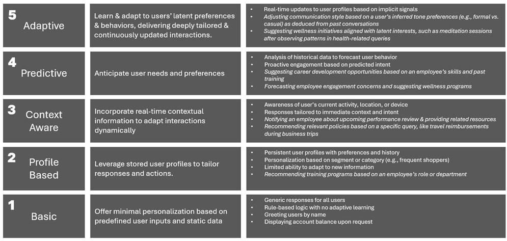

Personalization Maturity Model for Agentic
Conversational AI
Overview
The Personalization Maturity
Model (PMM) for Agentic Conversational AI outlines the stages of growth and
sophistication in creating personalized user interactions. As enterprises
progress through these stages, their chatbots evolve to deliver more relevant,
engaging, and context-aware experiences, ultimately driving higher user
satisfaction and business value.
Stages of Maturity
1. Basic Personalization
- Description: Chatbots offer minimal personalization
based on predefined user inputs and static data.
- Characteristics:
- Generic responses for all users.
- Limited use of user profiles (e.g., name or account
details).
- Rule-based logic with no adaptive learning.
- Examples:
- Greeting users by name.
- Displaying account balance upon request.
- Answering frequently asked questions, such as "What
are the office hours?"
- Directing users to static resources, like company
handbooks or policies.
2. Profile-Based Personalization
- Description: Chatbots leverage stored user profiles
to tailor responses and actions.
- Characteristics:
- Persistent user profiles with preferences and history.
- Personalization based on segment or category (e.g.,
frequent shoppers).
- Limited ability to adapt to new information.
- Examples:
- Recommending training programs based on an employee's
role or department.
- Automatically populating forms with the employee's stored
information (e.g., ID, department, manager).
- Sending reminders for expiring benefits or incomplete
tasks, like timesheet submissions.
- Highlighting upcoming events relevant to the user's team
or department.
3. Context-Aware Personalization
- Description: Chatbots incorporate real-time
contextual information to adapt interactions dynamically.
- Characteristics:
- Awareness of user's current activity, location, or
device.
- Integration with external systems (e.g., CRM, IoT
devices).
- Responses tailored to immediate context and intent.
- Examples:
- Notifying an employee about their upcoming performance
review and providing related resources.
- Offering assistance with benefits enrollment during the
open enrollment period.
- Recommending relevant policies based on a specific query,
like travel reimbursements during business trips.
- Suggesting real-time IT troubleshooting tips based on
current device usage.
4. Predictive Personalization
- Description: Chatbots anticipate user needs and
preferences using machine learning and predictive analytics.
- Characteristics:
- Analysis of historical data to forecast user behavior.
- Proactive engagement based on predicted intent.
- Continuous improvement through feedback loops.
- Examples:
- Suggesting career development opportunities based on an
employee's skills and past training.
- Proactively reminding managers of pending approvals for
leave or expense reports.
- Forecasting employee engagement concerns and suggesting
wellness programs.
- Notifying employees of potential skill gaps and offering
relevant learning paths.
5. Adaptive-Personalization
- Description: Chatbots deliver deeply personalized
interactions by learning user's latent preferences.
- Characteristics:
- Real-time, multi-source data aggregation (e.g., social
media, transaction history).
- Emotionally intelligent responses recognizing tone and
sentiment.
- Cross-channel continuity and personalization.
- Examples:
- Delivering empathetic responses to employee grievances,
recognizing tone and sentiment.
- Providing personalized wellness recommendations based on
work patterns and feedback from engagement surveys.
- Designing tailored career progression plans considering
an employee's aspirations and organizational goals.
- Offering seamless support for multi-channel queries
(e.g., transitioning from chat to email without losing context).

Factors Driving Maturity
- Data Availability and Quality: The richness and
accuracy of user data are foundational for advanced personalization.
- Technology Infrastructure: Sophisticated AI models,
robust integrations, and real-time analytics enable higher levels of
personalization.
- User-Centric Design: A deep understanding of user
behavior, needs, and preferences guides meaningful personalization
efforts.
- Organizational Commitment: Investment in
technology, training, and cross-functional collaboration ensures
sustainable maturity growth.
Benefits of Personalization Maturity
- Enhanced user satisfaction and loyalty.
- Improved operational efficiency through targeted
automation.
- Higher conversion rates and revenue growth.
- Strengthened brand differentiation.
Challenges and Considerations
- Balancing personalization with user privacy and data
security.
- Managing the complexity of integrations and dependencies.
- Ensuring scalability and adaptability to changing user
needs.
Conclusion
Enterprises must align their chatbot personalization
strategy with their broader business goals and technical capabilities. By
advancing through the stages of the PMM, they can unlock the full potential of
personalized chatbot interactions to deliver exceptional value to users and
stakeholders.
Let us create detailed examples for each stage in the
context of an HR chatbot to illustrate their application and impact, focusing
on scenarios such as recruitment assistance, employee onboarding, performance
management, and benefits queries.
Detailed Examples in the Context of an HR
Chatbot
1. Basic Personalization:
- Greeting new employees by their name during onboarding.
- Providing predefined FAQs such as "What is the leave
policy?" or "How do I reset my password?"
- Sharing a general welcome message during the first login.
- Offering links to company-wide announcements or holiday
calendars.
2. Profile-Based Personalization:
- Recommending training programs based on an employee's role
or department.
- Automatically populating forms with the employee's stored
information (e.g., ID, department, manager).
- Sending personalized notifications about work
anniversaries or birthday greetings.
- Suggesting relocation policies for employees flagged for
internal transfers.
3. Context-Aware Personalization:
- Notifying an employee about their upcoming performance
review and providing related resources.
- Offering assistance with benefits enrollment during the
open enrollment period.
- Highlighting travel policy specifics when the employee is
booking a business trip.
- Detecting prolonged inactivity and prompting employees to
complete pending tasks.
4. Predictive Personalization:
- Suggesting career development opportunities based on an
employee's skills and past training.
- Proactively reminding managers of pending approvals for
leave or expense reports.
- Identifying employees at risk of burnout based on recent
work patterns and recommending wellness sessions.
- Predicting future resource needs for departments and
notifying managers for proactive hiring decisions.
5. Hyper-Personalization:
- Delivering empathetic responses to employee grievances,
recognizing tone and sentiment.
- Providing personalized wellness recommendations based on
work patterns and feedback from engagement surveys.
- Designing tailored career progression plans considering an
employee's aspirations and organizational goals.
- Offering seamless support for multi-channel queries (e.g.,
transitioning from chat to email without losing context).
- Using voice recognition to identify and greet employees
personally in hybrid environments.